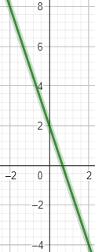
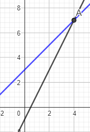

Como não sei explicar muito bem vou dar dois exemplos e as imagens serão retiradas do Geogebra.
Primeiro exemplo: f(x)=-3.x+2
eu irei utilizar os números de -2 a 2:
-3.-2+2=+8
-3.-1+2=+5
-3.0+2=+2
-3.1+2=-1
-3.2+2=-4

Segundo exemplo: f(x)=2x-1 , g(x)=x+3
Agora uma com ponto de interceção
2x-1=x+3
2x-x=1+3
x=4
y=x+3
y=4+3
y=7

!vídeo de ajuda!